Keep
Editable .kakiire file
- Annotations stay as layers. Change direction or size later
- Saves automatically. Go back to an earlier version from the history
- The original image is packed into the same file
- Preview the contents with Quick Look in Finder
kakiire【書き入れ】 Japanese: writing words or marks onto an image or a document.
Kakiire is a Mac app for drawing arrows, boxes and text on screenshots. Hide what shouldn't be seen with .
MCPAI agents like Claude Code can mark up images tooTapered arrows, boxes, outlined text, speech bubbles, stamps (numbers, letters, symbols, emoji). Switch tools with a single key.
Pixelate or blur email addresses and faces. Exported images always have them burned in.
Save as .kakiire and every arrow and mosaic stays a layer. Fix it next week if you need to.
01 — Tools
Every tool is one key away. Hold Shift while drawing to snap arrows and lines to 45°, make rectangles square and ellipses round. You can also paste another image on top, with a border and shadow. Lines come solid, dashed, dotted or dash-dot, and arrows can get a white outline so they stand out on red or dark images. Stamps go beyond 1, 2, 3 to A, B, C, ✓ ✗ ? ! and emoji. Speech bubbles come in four shapes (rounded, ellipse, cloud and jagged) and grow with the text.
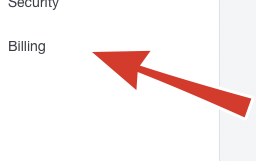
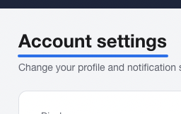
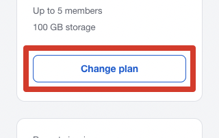
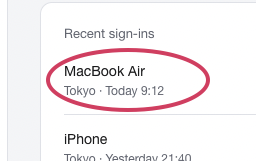
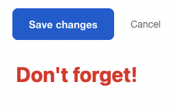
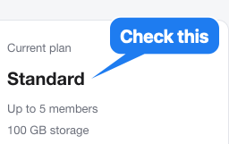
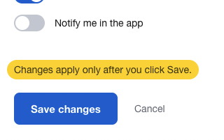
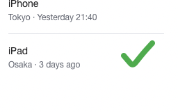
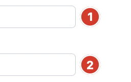
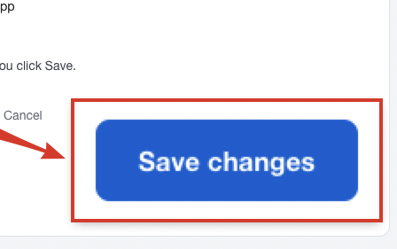
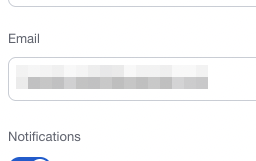
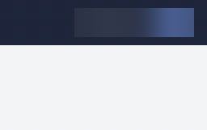
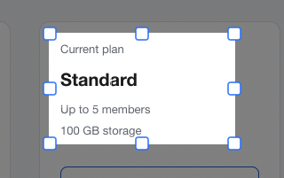
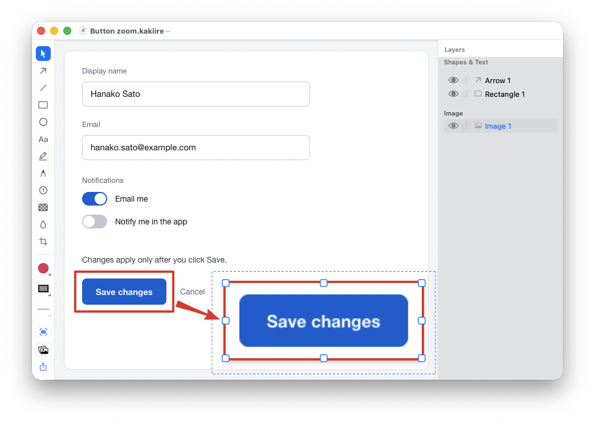
02 — Images
Lay another screenshot or photo on top of the first. Add a zoomed-in view of a tiny button, or put before and after side by side.
03 — Layers
Every arrow and box you draw stays as its own layer. Pick it from the list on the right to move it, recolor it or delete it. Even after you save and reopen the file.
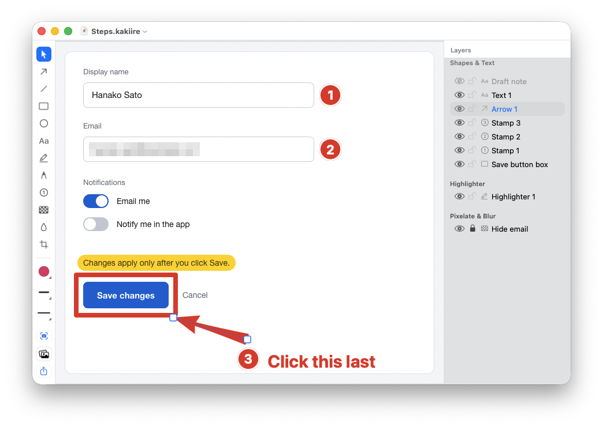
04 — Arrange
Select several boxes or stamps to align their edges or space them evenly. Turn on the grid as a guide. Rotating or cropping the image itself can be undone later, too.
05 — Save & Export
Keep
Share
A .kakiire file also contains the image before anything was hidden. When sharing with others, send the exported image.
06 — Capture
Take a screenshot with one keyboard shortcut, whatever app you're in. When you're done, the editor comes to the front so you can start right away. It's also in the menu bar.
For images you already have, drag & drop or paste with ⌘V.
You can also capture from the Shortcuts app or Spotlight.
07 — For AI agents
With the kakiire command and its MCP server, AI agents such as Claude Code can add arrows, boxes and pixelation to an image. It draws with the same engine as the app, so the result looks the same. Export as .kakiire and fix a slightly misplaced box in the app.
kakiire annotate adds every annotation written in JSON at oncekakiire mcp) and just ask: “Box the Save button in red”Install the CLI and MCP server (Homebrew)
brew install sumihiro3/tap/kakiireRegister the MCP server with Claude Code
claude mcp add -s user kakiire -- /opt/homebrew/bin/kakiire mcpThe CLI and MCP server are installed separately from the app. For installing from a zip or setting up Claude Desktop, see the usage guide (Japanese).
$ brew install sumihiro3/tap/kakiire $ claude mcp add -s user kakiire -- /opt/homebrew/bin/kakiire mcp > Box the "Save changes" button in ~/Desktop/shot.png in red, pixelate the email address, and save it as .kakiire ● kakiire · get_image_info ● kakiire · annotate_image └ Wrote ~/Desktop/shot.kakiire (1280x800 px, 2 annotations).
08 — For people who used Skitch
Skitch is Intel-only and won't run without Rosetta. Kakiire rebuilds that tapered arrow and that ease of use as a native Apple Silicon app, made only for the Mac.
Kakiire is an independent app and is not affiliated with the makers of Skitch.
09 — FAQ
Download Kakiire.dmg, open it, and drag Kakiire to Applications. It's notarized by Apple, so it opens without warnings. You can also install it with Homebrew:
brew install --cask sumihiro3/tap/kakiireIt's built to make switching easy.
Kakiire is an independent app and is not affiliated with the makers of Skitch.
It opens them as ordinary PNGs. The annotations you added in Skitch are baked into the picture, so you can't edit them one by one.
Yes. No feature limits, no trial period, and no account needed. The source code is available under the MIT License.
Save as .kakiire, and you can move, recolor or delete any arrow later. Hand out the PNG or JPEG you export, and keep the editable original for yourself.
No. It works offline and sends no usage data. It runs inside the App Sandbox, so it touches only the files you open or save.
Exported PNGs keep neither the image before the mosaic nor metadata such as location. A .kakiire file contains the original image, so export a PNG or JPEG when you share it.
Yes. It ships a CLI and an MCP server, so you can ask Claude Code or another agent to "put a red box around the Save button" and it adds the annotation. Everything runs on your Mac.
Yes. Installing Kakiire adds these actions to the Shortcuts app:
"Capture Area" and "Current Image" also work from Spotlight and Siri.
A Mac with Apple Silicon running macOS 15 or later. Intel Macs aren't supported.